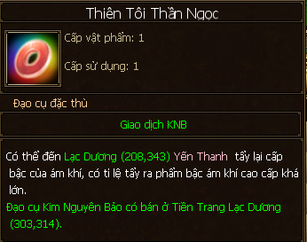
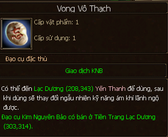

Ám Khí¶
Ám khí là trang bị lâu đời trong TLBB, tuy nhiên LingYun cũng xin mạn phép tóm lại một số ý chủ yếu là nhấn mạnh nó hơn với sự xuất hiện của loại ám khí mới - Kim Sí Linh Vũ kể từ phiên bản Ngạo Thế Quần Hùng.
2 NPC Yến Thanh và Vu Tinh Vũ - Lạc Dương (208, 343) phục vụ các chức năng liên quan đến Ám Khí.

Đôi nét về ám khí, từ xa xưa là có thuộc tính cơ bản, ở phiên bản mới (ám khí Kim Sí Linh Vũ) thì có thêm thuộc tính mở rộng.
Phân Loại¶
Khởi đầu là:
- Phi Hoàng Thạch (cấp 30, làm nhiệm vụ chính tuyến là có).
- Mai Hoa Tiêu (cấp 50, dùng Huyền Hạo Ngọc để đổi, làm nhiệm vụ hoặc có thể mở lễ bao ra).
- Băng Phách Thần Chấp (cấp 70, nâng cấp từ Mai Hoa Tiêu dùng 20 mảnh Hàn Băng Tinh Tiết (PB Yến Tử Ổ)).
- Kim Sí Linh Vũ (cấp 90, nâng cấp trực tiếp từ Băng Phách Thần Châm lên tại NPC Vu Tinh Vũ).
Phẩm Chất¶
Phẩm chất của ám khí cũng có tên gọi như đánh giá tư chất của Trân thú: Sơ cấp, Trác việt, Toàn Mỹ.
Phẩm chất càng cao thì hiệu quả của kỹ năng cơ bản và thuộc tính cơ bản càng cao.
Dùng vật phẩm Bách Thối Thần Ngọc hoặc Thiên Tối Thần Ngọc để tẩy lại phẩm chất ám khí.
- Đi phụ bản PMP có thể nhặt được.
Hình ảnh về vật phẩm Thiên Tối Tần Ngọc có tỉ lệ tẩy ra tư chất cao hơn so với Bách Thối Thần Ngọc.
Kỹ Năng Cơ Bản¶
Khi mang ám khí trong người và đi luyện công, ám khí cũng nhận được kinh nghiệm và lên cấp.
Ám khí mới nhận được sẽ có kỹ năng Ném ám khí: kỹ năng sát thương lên đối thủ.
Ám khí lên cấp 40 có thể học kỹ năng Ám khí đả huyệt: các đòn khống chế kéo dài trong x giây.
Ám khí lên cấp 70 có thể học kỹ năng Ám khí hộ thể: tăng % sinh lực, nội công,.. trong 30 phút.
Có thể dùng vật phẩm Vong Vô Thạch (phụ bản PMP) để tẩy lại kỹ năng ám khí.
Hình ảnh vật phẩm Vong Vô Thạch nhặt được trong phụ bản Phiêu Miễu Phong dùng để tẩy kỹ năng cơ bản của ám khí
Thuộc Tính Cơ Bản¶
- Dùng vật phẩm Thần Diệc Thạch (phụ bản Lâu Lan Tầm Bảo) để tẩy dồn điểm thuộc tính cơ bản theo ý muốn.
Kỹ Năng Liên Kích¶
Chỉ áp dụng với ám khí Kim Sí Linh Vũ, kỹ năng liên kích là một chiêu thức đánh kéo dài trong 5 giây chia làm 5 đoạn (thức), với thức cuối sẽ là thức có hiệu quả sát thương cao nhất.
Có thể dùng vật phẩm Linh Tựu Thạch (phụ bản Lang Hoàn Phúc Địa, event Kinh Hỷ Tam Liên) để tẩy đổi kỹ năng liên kích theo ý muốn.

Hình ảnh vật phẩm Linh Tựu Thạch dùng để tẩy kỹ năng liên kích ám khí
Thuộc Tính Mở Rộng¶
Chỉ áp dụng với ám khí Kim Sí Linh Vũ, bao gồm 3 dòng thuộc tính mở rộng: tăng giới hạn sinh lực, thuộc tính tấn công và chính xác.
Trước tiên cần tốn 100 vàng để tôi độc để tạo 3 dòng thuộc tính theo ý muốn (Băng/hỏa/huyền/độc).
Để tăng thuộc tính mở rộng, ta chọn dòng “Kim Sí Linh Vũ Luyện Độc”.
- Dùng các vật phẩm Ngũ Độc Châu (phụ bản Lang Hoàn Phúc Địa) để bồi dưỡng cho thuộc tính mở rộng.
- Chỉ tăng được đến tối đa là: 10688 Giới hạn sinh lực, 176 điểm tấn công thuộc tính, 2175 chính xác.

Trước tiên cần tôi độc 1 lần để định hình các dòng thuộc tính mở rộng sau đó dùng vật phẩm Ngũ Độc Châu để bồi dưỡng thuộc tính mở rộng bằng cách chọn “luyện độc”.
Cấp Sao Ám Khí¶
Tối đa: 8 sao
Cấp sao càng cao thì hiệu quả % của kỹ năng liên kích ám khí và thuộc tính mở rộng càng cao.
Dùng vật phẩm Long Tuyền Thiết Anh (phụ bản Lang Hoàn Phúc Địa, event Kinh Hỷ Tam Liên) để thăng cấp sao.

Hình ảnh vật phẩm Long Tuyền Thiết Anh dùng để nâng sao ám khí
Bảng tính số lượng Long Tuyền Thiết Anh cần để nâng sao ám khí¶ Cấp sao Số lượng Long Tuyền Thiết Anh 5 15 6 50 7 100 8 200
Kinh Nghiệm¶
- Thuộc tính cơ bản: đa số mọi người hay tẩy để dồn về Thể lực.
- Kỹ năng cơ bản: đây là chỗ tốn vàng khá nhiều, vì phải cố gắng tẩy cho ra kỹ năng ám khí đả huyệt và ám khí hộ thể tăng % máu cho ưng ý. Chú ý là tăng % máu rất quan trọng nhé, tối đa là 12%.
- Kỹ năng liên kích: đa số mọi người sẽ tẩy cho cùng về một thuộc tính tấn công của bản phái.
LingYun ghi chép lúc 22:21 28/7/2018